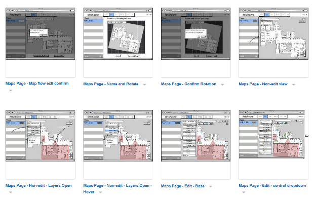
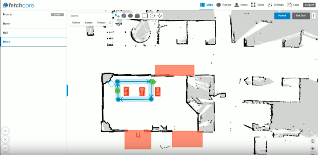

Melonee Wise (Fetch CEO) demos Fetchcore live at ProMat 2017.
The very first incarnation of Fetchcore circa 2015.
Fetchcore was designed to make directing a fleet of robots easy. Where other systems were slow to set up and required significant training or programming to use, Fetchcore was intended for busy warehouse managers. It was also designed to be a near real-time system such that you could watch and direct robots live in your warehouses. In addition it was designed with an eye to providing significant functionality even on mobile devices.
From the beginning Fetchcore was seen as an important differentiator between Fetch and its competitors. After we successfully secured a $20M funding round led by Softbank we started a major revision to the UI.
I made initial wireframes using Balsamiq which layed out page structure, expected workflows, error conditions, and details of user interaction. In conjunction with our talented designer David Dymesich these were then converted into mockups and tested internally with select users, refined and then implemented.
Fetchcore was designed as a mobile friendly React application built around a core real-time map component. In addition to visualizing the current location of robots in a given warehouse a crucial workflow for Fetchcore users was annotating the map such that robots would avoid certain locations, be aware of the names of specific points, and be guided along preferred paths. Redux was used initially to provide easy undo-redo functionality during annotation but quickly became an indispensable tool for state management and decoupling components.
A later incarnation of the map annotation interface.
The most challenging aspect of developing this UI was the interface between React and the mapping component. Initially it was developed using Leaflet which did not have React integration at the time. Leaflet provided a scalable tiled map paradigm, mobile support out of the box, and numerous plugins. Drawing plugins were initially used to provide users a way to mark out no-go areas on the map for the robots, lanes they should use for travel, and destinations. Eventually our needs diverged from the functionality Leaflet provided and we rebuilt the mapping component from scratch on top of Paper.js. This did not relieve the core tension between the declarative paradigm of React and the imperative structure of our mapping component, but allowed us a great deal of flexibility in design.
While I was the sole frontend developer for the very first generation of Fetchcore, subsequent revisions would not have been possible without a growing team of talented developers we recruited as well as the services of Cogniance. Managing a globally distributed team on a project with continually expanding ambitions was one of the more challenging things I've ever done. I am proud of what that team was able to accomplish. Subsequent to the release of several major revisions to Fetchcore, Fetch secured an additional $25M led by Sway Ventures. In no little part, I'm sure, due to Fetchcore. [end sarcasm]